Навыки: что открывает уровень
По каждому навыку — пороги и что они открывают; что навык даёт сам по себе — в таблице на странице Уровень K и навыки. На уровне показано несколько примеров; точное требование любого предмета видно в его подсказке («Требуется: …»), полный список — на экране характеристик (Открыть экран характеристик, нажать на значок навыка).
Здоровье
Всего замков: 14.
Уровень 10: использовать — 4.
Уровень 20: использовать — 1.
Уровень 30: использовать — 5.
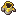
Уровень 50: использовать — 4.
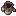
Сила
Всего замков: 417.
Уровень 1: использовать — 66.
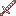
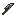
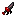
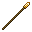
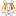
Бессмертное щупальце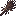
Уровень 5: использовать — 3.
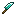
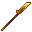
Уровень 6: использовать — 1.
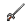
Уровень 10: использовать — 34.
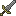
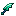
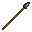
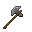
Кинжал§6Молоток для ореховУровень 12: использовать — 16.
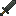
Череп рыбы-кости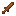
Уровень 13: использовать — 2.
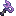
Золотая булаваУровень 14: использовать — 1.
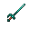
Уровень 15: использовать — 10.
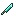
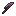
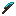
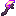
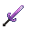
Уровень 16: использовать — 4.
Уровень 18: использовать — 1.
Уровень 20: использовать — 57.
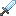
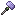
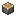
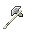
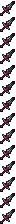
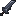
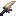
Уровень 22: использовать — 1.
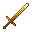
Уровень 24: использовать — 2.
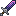
Известняковое копьёУровень 25: использовать — 9.
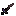
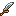
Уровень 29: использовать — 1.
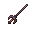
Уровень 30: использовать — 39.
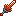
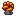
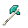
Меч воинаУровень 35: использовать — 4.
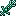
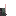
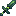
Уровень 36: использовать — 4.
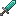
Уровень 37: использовать — 1.
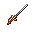
Уровень 40: использовать — 29.
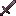
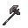
§6Ракушковая булаваПриливные когти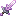
Deepsilver Skillet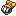
Gold Contorted ClaymoreУровень 41: использовать — 45.
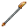
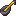
§6ВилыМясорубкаIron HalberdУровень 42: использовать — 2.
Уровень 43: использовать — 24.
Уровень 44: использовать — 14.
Уровень 45: использовать — 14.
Уровень 46: использовать — 14.
Уровень 48: использовать — 10.
Уровень 49: использовать — 5.
Уровень 50: использовать — 4.
Ловкость
Всего замков: 64.
Уровень 10: использовать — 10.
Уровень 20: использовать — 11.
Уровень 30: использовать — 23.
Уровень 40: использовать — 4.
Уровень 50: использовать — 16.
Защита
Всего замков: 506.
Уровень 1: использовать — 150.
Уровень 2: использовать — 8.
Уровень 4: использовать — 1.
Уровень 5: использовать — 43.
Уровень 6: использовать — 9.
Уровень 7: использовать — 7.
Уровень 8: использовать — 3.
Уровень 9: использовать — 16.
Уровень 10: использовать — 44.
Уровень 11: использовать — 12.
Уровень 12: использовать — 21.
Уровень 13: использовать — 1.
Уровень 14: использовать — 2.
Уровень 15: использовать — 34.
Уровень 16: использовать — 10.
Уровень 17: использовать — 3.
Уровень 18: использовать — 1.
Уровень 20: использовать — 26.
Уровень 21: использовать — 6.
Уровень 22: использовать — 7.
Уровень 23: использовать — 5.
Уровень 24: использовать — 10.
Уровень 25: использовать — 5.
Уровень 26: использовать — 3.
Уровень 27: использовать — 3.
Уровень 28: использовать — 4.
Уровень 29: использовать — 2.
Уровень 30: использовать — 18.
Уровень 31: использовать — 2.
Уровень 32: использовать — 3.
Уровень 33: использовать — 1.
Уровень 34: использовать — 12.
Уровень 35: использовать — 1.
Уровень 36: использовать — 5.
Уровень 38: использовать — 2.
Уровень 39: использовать — 1.
Уровень 40: использовать — 6.
Уровень 43: использовать — 1.
Уровень 44: использовать — 2.
Уровень 46: использовать — 1.
Уровень 48: использовать — 1.
Уровень 50: использовать — 14.
Выносливость
Всего замков: 39.
Уровень 10: использовать — 15.
Уровень 30: использовать — 12.
Уровень 50: использовать — 12.
Удача
Всего замков: 5.
Уровень 30: пользоваться блоком — 1, использовать — 4.
Стрельба
Всего замков: 42.
Уровень 10: использовать — 2.
Уровень 12: использовать — 5.
Уровень 14: использовать — 6.
Уровень 16: использовать — 9.
Уровень 20: использовать — 4.
Уровень 22: использовать — 3.
Уровень 26: использовать — 1.
Уровень 30: использовать — 2.
Уровень 40: использовать — 6.
Уровень 42: использовать — 4.
Торговля
Всего замков: 4.
Уровень 5: пользоваться блоком — 1, торговать / взаимодействовать — 1.
Уровень 10: торговать / взаимодействовать — 1, использовать — 1.
Кузнечное дело
Всего замков: 5329.
Уровень 3: пользоваться блоком — 9, крафтить — 9.
Уровень 4: пользоваться блоком — 20, крафтить — 476.
Уровень 5: крафтить — 263.
Уровень 6: пользоваться блоком — 1, крафтить — 70.
Уровень 7: крафтить — 9.
Уровень 8: пользоваться блоком — 7, крафтить — 202.
Уровень 9: крафтить — 70.
Уровень 10: пользоваться блоком — 382, крафтить — 236, использовать — 2.
Уровень 11: крафтить — 13.
Уровень 12: пользоваться блоком — 10, крафтить — 1074.
Уровень 13: крафтить — 14.
Уровень 14: пользоваться блоком — 5, крафтить — 589.
Уровень 15: пользоваться блоком — 1, крафтить — 13.
Уровень 16: пользоваться блоком — 19, крафтить — 117.
Уровень 17: крафтить — 4.
Уровень 18: пользоваться блоком — 1, крафтить — 43.
Уровень 19: крафтить — 43.
Уровень 20: пользоваться блоком — 3, крафтить — 305.
Уровень 21: крафтить — 5.
Уровень 22: пользоваться блоком — 6, крафтить — 7.
Уровень 24: крафтить — 98.
Уровень 25: крафтить — 6.
Уровень 26: пользоваться блоком — 5, крафтить — 17.
Уровень 27: крафтить — 4.
Уровень 28: крафтить — 51.
Уровень 29: крафтить — 19.
Уровень 30: пользоваться блоком — 15, крафтить — 486, использовать — 1.
Уровень 31: крафтить — 3.
Уровень 32: пользоваться блоком — 2, крафтить — 15.
Уровень 33: крафтить — 4.
Уровень 34: крафтить — 67.
Уровень 35: крафтить — 2.
Уровень 36: пользоваться блоком — 22, крафтить — 50.
Уровень 37: крафтить — 41.
Уровень 38: крафтить — 13.
Уровень 39: крафтить — 8.
Уровень 40: пользоваться блоком — 6, крафтить — 34, ковать — 1.
Уровень 41: крафтить — 1.
Уровень 42: пользоваться блоком — 3, крафтить — 33.
Уровень 43: крафтить — 1.
Уровень 44: пользоваться блоком — 7, крафтить — 68.
Уровень 45: крафтить — 57.
Уровень 46: крафтить — 28.
Уровень 47: крафтить — 33.
Уровень 48: крафтить — 28.
Уровень 49: крафтить — 17.
Уровень 50: крафтить — 47, ковать — 8.
Добыча руды
Всего замков: 567.
Уровень 1: использовать — 21.
Уровень 4: использовать — 2, добывать — 14.
Уровень 5: использовать — 12, добывать — 1.
Уровень 6: добывать — 16.
Уровень 8: использовать — 55, добывать — 11.
Уровень 9: использовать — 1.
Уровень 10: использовать — 42, добывать — 129.
Уровень 12: добывать — 22.
Уровень 13: использовать — 1.
Уровень 14: использовать — 1, добывать — 7.
Уровень 15: пользоваться блоком — 1, использовать — 4, добывать — 10.
Уровень 16: использовать — 11, добывать — 22.
Уровень 20: использовать — 12, добывать — 45.
Уровень 22: использовать — 1.
Уровень 24: использовать — 2, добывать — 7.
Уровень 25: использовать — 4.
Уровень 26: использовать — 3, добывать — 2.
Уровень 30: использовать — 9, добывать — 30.
Уровень 36: использовать — 3, добывать — 5.
Уровень 40: использовать — 5, добывать — 2.
Уровень 41: использовать — 12.
Уровень 42: использовать — 10, добывать — 12.
Уровень 43: использовать — 5.
Уровень 44: использовать — 7, добывать — 2.
Уровень 45: использовать — 3.
Уровень 50: использовать — 3.
Земледелие
Всего замков: 70.
Уровень 1: использовать — 14.
Уровень 4: использовать — 2.
Уровень 6: использовать — 4.
Уровень 8: пользоваться блоком — 1, использовать — 7.
Уровень 10: пользоваться блоком — 1, использовать — 3.
Уровень 14: использовать — 1.
Уровень 15: пользоваться блоком — 1.
Уровень 16: использовать — 5.
Уровень 20: использовать — 6.
Уровень 26: использовать — 2.
Уровень 30: пользоваться блоком — 1, использовать — 6.
Уровень 35: использовать — 3.
Уровень 36: использовать — 1.
Уровень 38: использовать — 1.
Уровень 40: использовать — 3.
Уровень 41: использовать — 3.
Уровень 43: использовать — 3.
Уровень 50: использовать — 2.
Алхимия
Всего замков: 676.
Уровень 4: варить — 5, использовать — 1.
Уровень 5: варить — 3, использовать — 9.
Уровень 6: пользоваться блоком — 2, варить — 1, крафтить — 34, использовать — 2.
Уровень 7: варить — 1.
Уровень 8: пользоваться блоком — 5, варить — 1, крафтить — 55, использовать — 6.
Уровень 9: варить — 1.
Уровень 10: пользоваться блоком — 2, варить — 1, крафтить — 14, использовать — 20.
Уровень 11: варить — 1.
Уровень 12: варить — 1, крафтить — 12, использовать — 5.
Уровень 13: варить — 1.
Уровень 14: варить — 1, использовать — 5.
Уровень 15: пользоваться блоком — 6, варить — 1, крафтить — 12, использовать — 46.
Уровень 16: пользоваться блоком — 8, варить — 1, крафтить — 19, использовать — 35.
Уровень 17: варить — 1.
Уровень 18: варить — 1.
Уровень 19: варить — 1, крафтить — 11.
Уровень 20: пользоваться блоком — 4, варить — 1, крафтить — 79, использовать — 19.
Уровень 22: крафтить — 7, использовать — 1.
Уровень 24: крафтить — 5.
Уровень 26: использовать — 6.
Уровень 28: пользоваться блоком — 1, крафтить — 30, использовать — 1.
Уровень 30: крафтить — 5, использовать — 29.
Уровень 32: пользоваться блоком — 1, крафтить — 46, использовать — 6.
Уровень 36: крафтить — 6, использовать — 7.
Уровень 40: использовать — 17.
Уровень 42: пользоваться блоком — 2, крафтить — 21, использовать — 3.
Уровень 44: крафтить — 21, использовать — 1.
Уровень 46: крафтить — 2.
Уровень 50: использовать — 24.